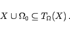
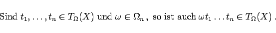
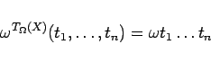
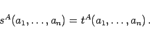

|  | (5.304) |
|  | (5.305) |
|  | (5.306) |
erklärt.
|  | (5.307) |
Eine gleichungsdefinierte Klasse von  -Algebren ist eine Klasse von
-Algebren ist eine Klasse von  -Algebren, die eine vorgegebene Menge von Gleichungen erfüllen.
-Algebren, die eine vorgegebene Menge von Gleichungen erfüllen.
| Beispiel |
|
Varietäten sind zum Beispiel die Klasse aller Halbgruppen, die Klasse aller Gruppen, die Klasse aller ABELschen Gruppen und die Klasse aller Ringe. Andererseits gilt zum Beispiel, daß das direkte Produkt von zyklischen Gruppen keine zyklische Gruppe und das direkte Produkt von Körpern kein Körper ist. Deshalb bilden die zyklischen Gruppen bzw. Körper keine Varietäten und können nicht durch Gleichungen definiert werden. |